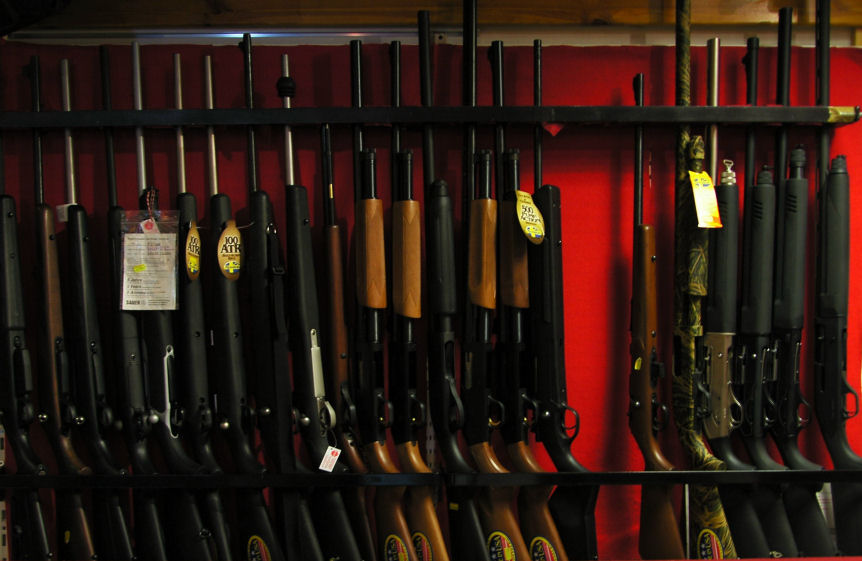

Våpenleie og regler
Weapons rental and rules
Ifølge Svalbardforskriften må du bære et våpen som beskyttelse mot polarbår når du bor utenfor bosetninger. Vi på SportsCentret kan levere deg eller din ekspedisjon rifler av topp kvalitet, så vel som annet sikkerhetsutstyr (turledninger, signalpistol, signalpenn).
Hvis du ønsker å leie en pistol, må du vise tillatelse fra hjemlandet ditt som viser at du er egnet til å bære skytevåpen. Internasjonalt våpenpass eller pistollisens. Militær eller advokatpersonell kan bruke deres tjeneste-id. I spesielle tilfeller hvis du ikke har tillatelse fra hjemlandet ditt, er det mulig å få tillatelse fra Svalbard, søknadsfrist for dette kan vare opp til en måned.
Nordmenn må forevise våpenkort, militærets eller politiets tjenestebevis eller internasjonal våpenpass. Personer uten våpenkort må søke sysselmannen om tillatelse til å leie våpen, behandlingstiden kan være opp til 1 måned.
For mer informasjon se www.sysselmannen.no.
Vi tilbyr våpen til leie:
200.- pr dag / 24 timer
1000.- pr. uke
Disse våpen er Mauser M98 30.06. Vi tilbyr Ruger Compact 308 Win for Nok 300.- pr dag / 24 timer eller Nok 1500.- pr. uke.
På forskudd må du betale et innskudd i kontanter for pistol og ammunisjon på 1.200.-. Du betaler din leie på forhånd. Vi tilbyr rabatt på leien hvis du leier en pistol i mer enn 1 uke. Hver brukt patron er 25 NOK.
Er du over 18, kan du også leie Cal 4. 26mm signalpistoler:
100 NOK en dag / 24 timer
500 NOK for en uke
Ammunisjon for disse signalgunene kan du leie for Nok 25.- en dag / 24 timer. Flashbang-patroner til denne pistolen er nok 130.- og signalfargene rød / grønn / hvit er 110.- hver hvis brukt eller for å kjøpe. Depositum for leie av signalpistoler er Nok 500.- i kontanter foran. Dette er et godt element for å skremme av isbjørnen, men ingen erstatning for geværet.
Til salgs har vi de fleste kjente kaliber`s, men også noen få "villkatter" som 454 Casull, 500 SW.
According to the Svalbard Regulations, you must wear a weapon as protection against polar bear when living outside settlements. We at SportsCenter can deliver you or your expedition top quality rifles as well as other safety equipment (turbines, signal guns, signal pens).
If you want to hire a gun, you must show permission from your home country that shows that you are fit to carry firearms. International Arms Pass or Pistol Censorship. Military or lawyer can use their service ID. In special cases, if you do not have permission from your home country, it is possible to get permission from Svalbard, the application deadline for this may take up to one month.
Norwegians must provide weapons cards, military or police service certificates or international weapons passports. Persons without weapons cards must apply to the Governor for permission to hire weapons, the processing time may be up to 1 month.
For more information, see www.sysselmannen.no.
We offer weapons for rent:
200.- per day / 24 hours
1000.- per. week
These weapons are Mauser M98 30.06. We offer Ruger Compact 308 Win for nok 300.- per day / 24 hours or nok 1500.- per. week.
In advance, you have to pay a cash deposit for gun and ammunition of 1,200.-. You pay your rent in advance. We offer a discount on the rent if you rent a gun for more than 1 week. Each used cartridge is 25 NOK.
Are you over 18, you can also rent Cal 4. 26mm signal guns:
100 NOK for one day / 24 hours
500 NOK for one week
Ammunition for these signal guns can be rented for the 25th to 25th day / 24h. Flashbang cartridges for this gun are probably 130.- and the red / green / white signal colors are 110.- Each if used or to buy. Deposit for rental of signal guns is nok 500.- in cash in front. This is a good element to scare the polar bear, but no replacement for the gun.
For sale we have the most famous caliber`s, but also a few "wild cats" like 454 Casull, 500 SW.